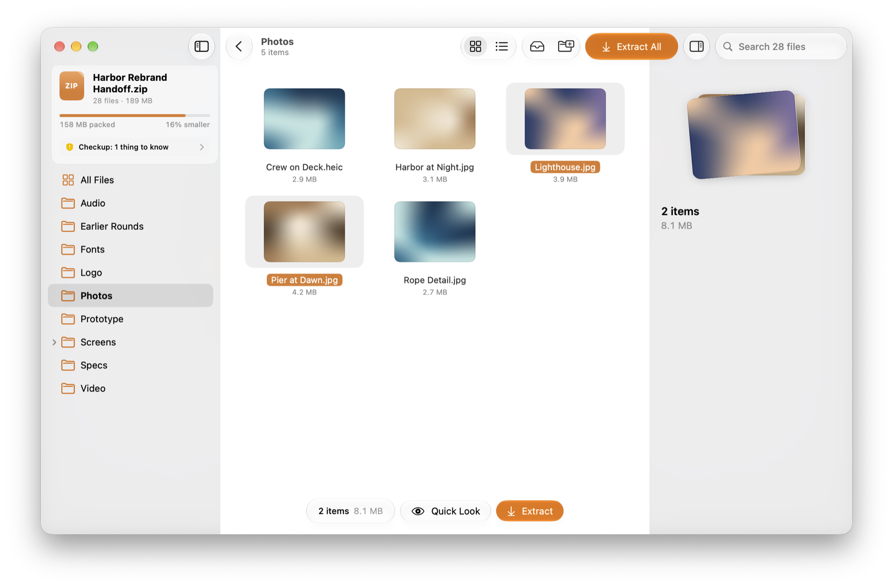
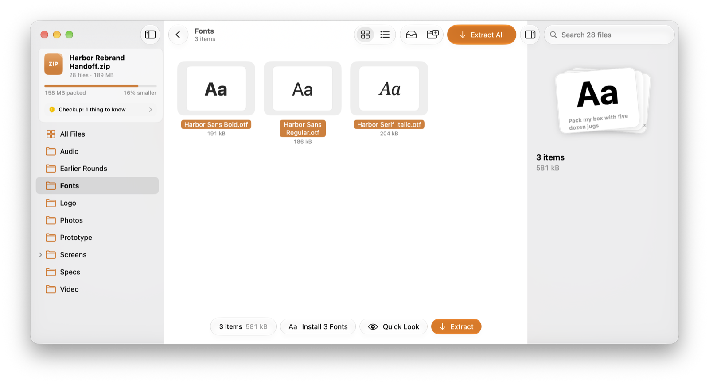

See what’s inside, know it’s safe, and take the next step — without extracting a thing. Packing for someone else? Stow makes sure it opens on their computer too.
Free and open source · No ads, no accounts · Nothing leaves your Mac

Designed around what you actually ask
Every archive raises the same four questions.
Most archive tools answer one of them: “where should I extract this?” Stow answers all four, on one screen.
What’s in it?
Browse, search and preview everything — even archives inside archives — before anything touches your disk.
Is it safe?
Every archive gets a Checkup: paths that try to escape, unsigned apps, files that expand suspiciously.
What’s next?
Fonts offer to install. Apps offer to move to Applications. The right step is already on screen.
Will it open for them?
Tell Stow who it’s for. It fixes names Windows rejects and leaves out Mac-only clutter.
Checkup
A checkup before anything touches your disk.
Stow inspects every archive the moment it opens and tells you what it found, in plain words. Problems are handled for you — and explained, so you’re never surprised.
Paths stay inside. Entries that try to write outside the folder are kept in it.
Nothing half-written. Work happens in a private staging area; a cancelled job leaves no mess.
Originals untouched. Browsing and previewing never change the archive.
ZIP
Harbor Rebrand Handoff.zip
28 files · 189 MB · 16% smaller packed
1 thing to know
Harbor Prototype.app isn’t notarizedmacOS will ask before opening it. Only run it if you trust whoever sent this.
1 path tried to leave the folder“../../.zshrc” will be kept inside the destination folder instead.
14 macOS helper files hidden“.DS_Store” and “._” files won’t be extracted.
Names and sizes look normalNothing expands unusually and no names collide.
Next Steps
The next step is already there.
Select something and a floating capsule offers exactly what makes sense for it — no hunting through menus, no extracting first and figuring it out later.
Fonts → Install, straight from the archive.
Apps → Move to Applications, with the Checkup’s verdict alongside.
Installers → Open Installer, without unpacking first.
Archives inside archives → Open Inside, like a folder.

Packing
Say how you want it. In one sentence.
No dialog full of checkboxes. Change any highlighted word — the report underneath tells you exactly what will happen. Try it.
Click a highlighted word to change it
Thoughtful details
Small things, done properly.
Hover to peek
Rest the pointer on a file to preview it. Once one is open, its neighbours open instantly — so scanning a list feels effortless.
Lighthouse.jpg3.9 MB
Pier at Dawn.jpg4.2 MB
Harbor at Night.jpg3.1 MB
Brand Guidelines.pdf8.4 MB
Rope Detail.jpg2.7 MB
The Tray
A floating shelf at the edge of your screen. Gather files from different folders, then pack them or drag them out together.
Invoice October.pdf
Pier at Dawn.jpg
Kickoff.key
Search inside
Remember part of a name? That’s enough.
harb
Harbor Mark.svgLogo
Harbor at Night.jpgPhotos
Nested archives
An archive inside an archive opens like a folder. No extracting first.
Handoff.zip›Earlier Rounds›Old Explorations.7z
Encrypted & split
AES-256, hidden file names in 7Z, and volumes sized for email or a FAT32 drive.
••••••••
.001
.002
.003
Formats
Opens 30+ formats. Creates the ones that matter.
From everyday ZIPs to installer packages and disk images, built on the official 7-Zip engine.
Format
Extensions
Create
ZIP
.zip .zipx .jar .apk
Encryption, split volumes
7Z
.7z
Encrypted file names
TAR family
.tar .tgz .tbz2 .txz .tar.zst
Keeps permissions
RAR 4 & 5
.rar .cbr .partN.rar
Open & extract
Compressed files
.gz .bz2 .xz .lzma .lz .zst
Open & extract
Disk images
.dmg .iso
Open & extract
Packages
.pkg .xar .cab .msi .rpm .deb .cpio .arj .lzh
Open & extract
Privacy
Your files stay yours.
Everything happens on your Mac
No uploads, no analytics on what you open. Archive contents, names and passwords never leave the device.
Parsing runs in isolation
Archives are read by a separate, sandboxed helper. A malformed file can’t reach the rest of the app.
Nothing changes until you save
Edits are staged and written in one step. Cancel, or hit an error, and the original is exactly as it was.
Open source
Free. All of it. For everyone.
No trials, no Pro tier, no feature behind a paywall. Every line is public, so you can read exactly what Stow does with your files.
Read every line
The app, the sandboxed engine helper and this website are all in one public repository. Trust you can check.
Everything included
Search, hover previews, encryption, split volumes, editing, installing apps and fonts — no upsell, ever.
Built in the open
Report a bug, suggest a format, translate the interface or send a pull request. The roadmap is public too.
Never by browsing, previewing or extracting. Changes happen only when you edit and save — and they’re written to a staging copy first, so a cancel or an error leaves the original exactly as it was.
Can it create RAR files?
No — RAR creation is licensed by its authors. Stow opens and extracts RAR 4 and 5 (including encrypted and multi-part ones). To pack, ZIP works everywhere and 7Z compresses harder.
What does “for Windows PCs” actually change?
It replaces characters Windows rejects (like “:” or “?”), renames reserved names such as “aux”, stores accents the way Windows expects, and leaves out “.DS_Store” and other Finder files. You see every change before packing; your originals stay as they are.
Are my files or passwords uploaded?
No. Everything happens on your Mac. Stow has no accounts and sends nothing about your files anywhere — and because it’s open source, you can verify that.
Is it really free?
Yes — every feature, for everyone, with no trial or upgrade. Stow is open source.
How can I help?
File bugs and feature requests, add a translation, or pick up an issue and send a pull request. Archives that Stow struggles with are especially useful — share them if you can.